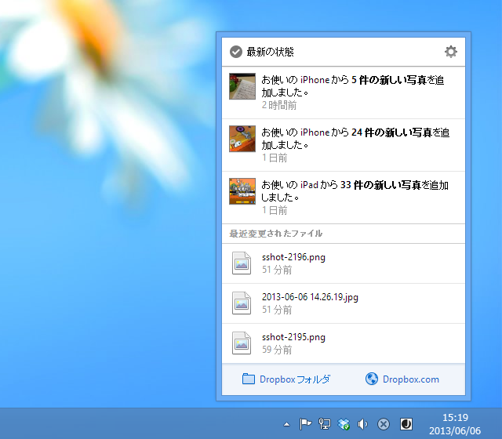

Dropbox 2.2.x の通知機能
公開日：

New in 2.2.0
- Fix an issue preventing Dropbox from starting up when it encounters a permissions error.
- Fix an issue preventing Dropbox from syncing files that are being actively edited.
(6/5) - Release Candidate Build - 2.2.0 « Dropbox ForumsNew in 2.2
- New notifications badge
- Refactoring of core sync engine
- Improved memory usage
- Startup performance improvements
- Finder icon overlay improvements

Dropbox って自動アップデートだったんだっけ？ うちのはいつのまにか v2.2.1 になってた（(6/7) - Release Candidate Build - 2.2.1 « Dropbox Forums）。このバージョンからの変更かどうかは知らないけれど、通知機能がすこしリッチになっているのは確か。